《机器学习技法》系列课程（十一）
Adaptive Boosted Decision Tree
什么是GBDT（Gradient Boosted Decision Tree）？我们首先考虑随机森林的相关内容，RF利用bootstrap的方法从原始数据中不放回地随机抽取相同容量的数据，利用这些数据分别学习不同的决策树，然后通过Uniform的方法将所有的决策树融合到一起。上面我们为了得到RF使用了Bagging的方法，如果我们使用另一种方法——Adaptive Boosting（AdaBoost），就需要引入数据的权重u（在AdaBoost中已经讲解过了），我们将会用u来表示在新数据中每一种数据的频度，我们用这些u来学习到新的决策树，然后通过计算αt（大根号的自然对数，详见AdaBoost）将这些决策树组合到一起，我们将这种方法称为AdaBoost-DTree。如果采用这种方法，我们就需要改变决策树算法让其接受带有weight的数据。
对于这种带有weight的决策树算法，它需要最小化带有weight的Ein：
也就是我们需要求和每个样本点的错误乘以这个样本点出现的次数，这对于决策树来说比较复杂，那么我们能否尝试不改变原来的演算法，转而在数据上做一些处理来实现我们原来的目的呢——这实际上是可以做到的。我们来考虑我们刚刚一直提到的权重这个概念到底是什么，对Bagging来说，权重就是使用Bootstrap方法复制原有的数据，每一个数据到底复制了几份，这个“几份”就是我们所谓的权重；或者权重也可以表述为一个采样（sampling），我们可以根据u的数值在原始数据上进行采样，那么采样结果中每种数据出现的几率应该是和权重u成正比的。
依据上面的表述，AdaBoost-DTree模型可以无需修改决策树算法，仅通过AdaBoost、决策树以及正比于权重u的数据采样就可以实现。
此外，AdaBoost中关键的一步是计算当前g的错误率，并依据这个错误率来重新调整数据（re-weighting）。
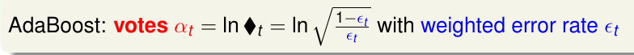
然而，考虑这种情况：如果用于学习决策树的过程中我们没有加以任何限制，并且使用了全部的数据，那么决策树就会完全成长，最终Ein=0，那么此时αt就会变为0。这就说明我们只要使用这一棵树就能完成任务了（autocarcy），但实际上却并不如此。从这个角度来看，我们可能需要一些能力更”弱“的决策树，所以我们可能需要对决策树进行剪枝操作，或者更简单的方法，只要限制决策树的高度即可，另外，我们也要使用sampling来使用部分数据。
那么继续上面的问题，什么是最弱的树呢？当然就是对数据只切一刀，这就是我们之前提到的Decision Stump，这也就是说，AdaBoost-Stump是AdaBoost-DTree的一个特例。
Optimization View of AdaBoost
我们进一步来探究AdaBoost的奥妙。AdaBoost中的一个关键点是对数据进行re-weighting，其过程如下：
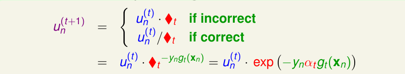
正如上述表达式中所体现的，我们根据在当前这一笔数据上g是正确的还是错误的对权重u乘以或者除以一个量。我们可以对这个表达进一步简化为一个表达式，能够这样转换的原因在于如果yn和gt(xn)同号则为正确的，否则为错误的。方框t我们在AdaBoost中已经引入，其为对一个根号表达式αt取对数，因此可以将它们放入到exp中。
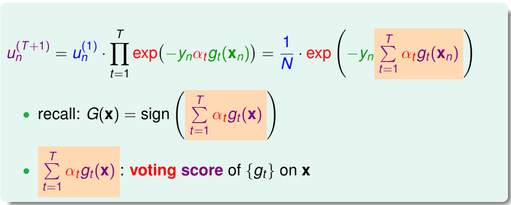
所以，un(t+1)等于最初的一个un连乘到unt，如上图中表达式所示，值得注意的是橘黄色的部分，它刚好是我们最终需要的G中的分数部分，如果它大于0，则结果为正1类，小于0，则为-1。我们将它称为voting score，其实际上就是在对gt进行投票，看最终gt对整个结果所起到的作用到底有多重要。

我们继续讨论voting score。AdaBoost实际上是linear blending的一个延伸，对于linear blending，它可以看做是一个特征转换，并使用线性模型将这些转换组合到一起（可能会有条件约束，但是可以省略）。我们可以换一个角度来考虑这个voting score，将αt看做是权重w，gt看做是特征转换 φ，那么，我们可以将w乘以 φ看做是一种距离（SVM中margin有类似形式的表达）。
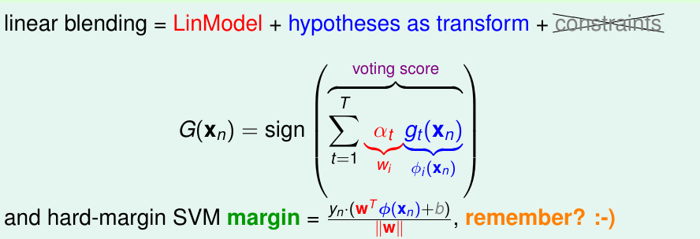
这也就是说，可以将yn乘以voting score看作是没有正规化的距离（带符号的），那么我们需要让这个margin越大越好，这也就是说需要让exp(-yn(voting score))越小越好，从而un(t+1)也要小。
实际上，随着AdaBoost的进行，对unt的加和会越来越小，这也说明了它能够保证可以达到large margin的效果。
现在我们来研究关于Ada1Boost的Error Function：
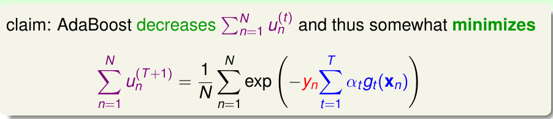
我们将01Error和ErrorADA绘制到同一张图片中，可以发现ADA Error是01error的一个上界，我们称其为exponential error measure。
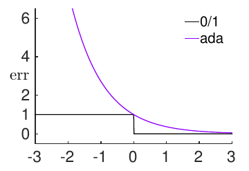
所以，做好ADA Error，就能大概将01 Error做的好。
然而，AdaBoost真的能够做的好吗，我们该做呢？我们解决这个问题所使用的技巧其实都已经学习过了：使用梯度下降（Gradient Descent）和泰勒展开，求一个最好的方向，在这个方向走一个η大小的步子，最终最优化我们的问题。
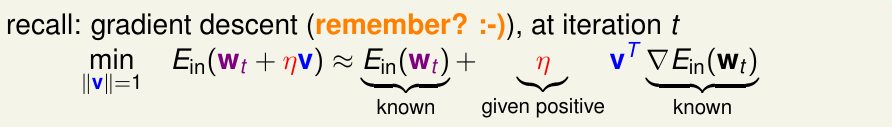
对于我们将要证明的问题，我们需要依样画葫芦——将g当成方向——我们对函数求梯度和向量其实没有什么太大不同，只是在index上有所区别，函数的index是实数，而向量的index是整数。
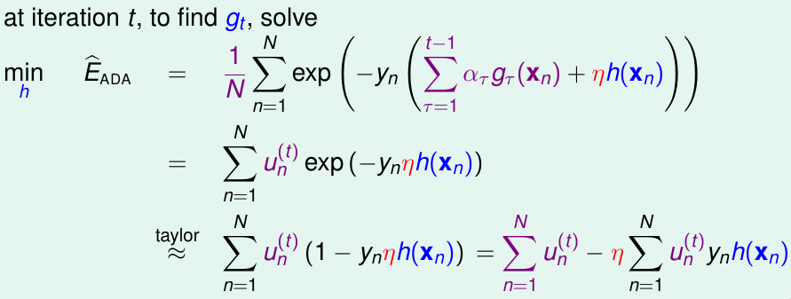
每一次，我们需要找到一个好的h，来最小化上述表达式的第二项（此时忽略η）。
对于一个二分类问题，yn和h(x)只会取值为1或者-1。那么，我们可以将需要最小化的表达式改写、平移：
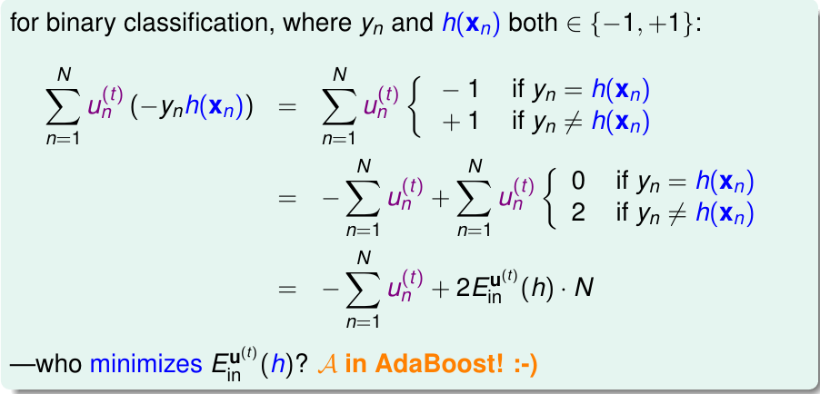
那么此时我们优化问题就转化为优化Einu，这也就是AdaBoost中所做的事情，也就表示AdaBoost可以帮我们找到‘梯度下降’的最好的方向（注意，此时是函数方向而非向量方向）。
我们利用Adab可以找到最佳的方向gt，那么该怎样学习合适的η呢？可以使用固定的较小η，但是这会导致计算复杂，所以我们可能需要一个更大的η，或者干脆找到一个最好的η，沿着某个方向走到最深处（steepest descent for optimization）。
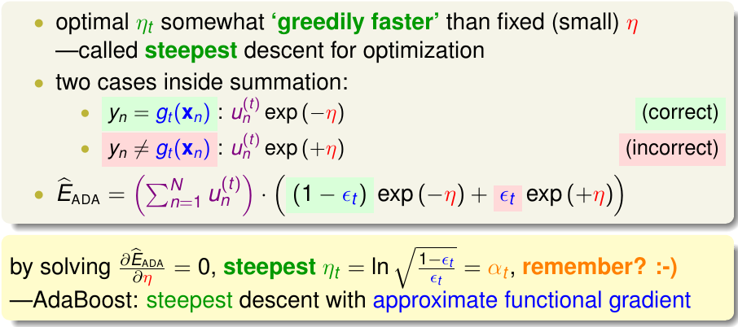
正如上述推导，对于二分类我们可以考虑两种情况，针对这两种情况，我们可以将ADA ERROR进行整理。然后对η求偏导数，得到最佳的η刚好等于AdaBoost中的αt。这也就说明了AdaBoost就是在寻找梯度下降的最优的方向和步长。我们通过AdaBoost来学习gt和αt的同时，也确定了梯度下降的函数方向以及步长。
Gradient Boosting
对于二分类的AdaBoost，它的求解过程就是在优化h和η：
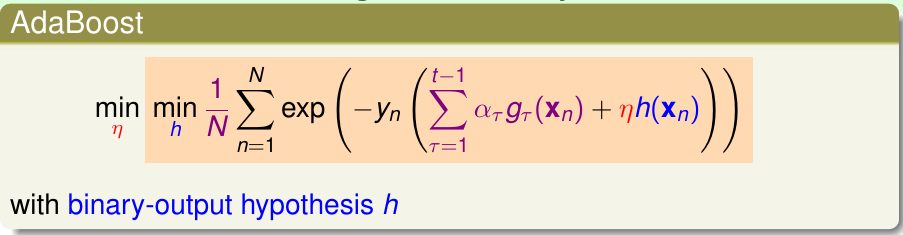
我们可以将AdaBoost推广到更一般的情况中，即令其使用回归的error或者其他error（只要其满足平滑的条件，因为需要使用Gradient Descent的方法最优化方向h和步长η），我们称其为GradientBoost：

对于用于Regression的GradientBoost，error function使用平方误差函数：
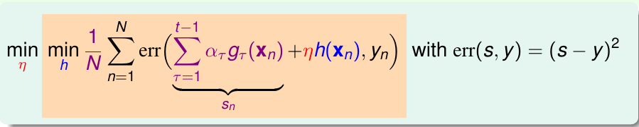
上述的表达式看起来了很复杂，我们将对αtgt求和部分取别名为sn，我们需要寻找方向h和步长η。我们首先忽略η，求解h。可以使用泰勒展开：
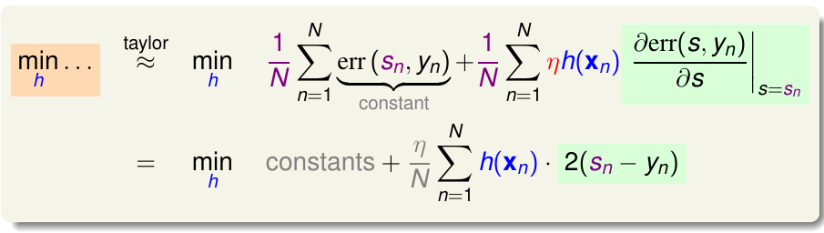
然而我们并不直接优化上述表达式，因为如果不限制h(x)的大小，当然其取值为负无穷时最好，如果对其进行限制，则会求解有条件的最优化问题，这很难解决。我们可以将h当做一个惩罚项，h如果越大，则我们越不喜欢它，如果很小，则看起来还不错：
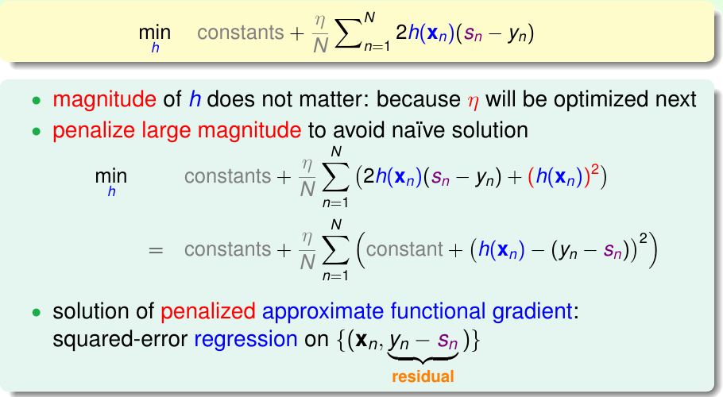
我们通过配方将其表达为更适合计算的形式，注意灰色的都是常亮，并不会影响到优化问题。我们称yn -sn为余数（residual），表示当前第n个样本与预测样本的差值，余数表示当前预测的结果与余数的差值。我们如果优化这个问题，只需要让h最接近余数即可，这实际上就是一个回归问题。我们通过在余数上使用回归的方法能够得到最好的方向gt=h。
在找到h之后，我们还需要决定η。
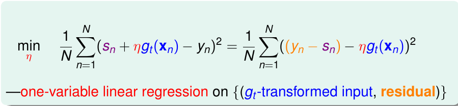
GBDT:
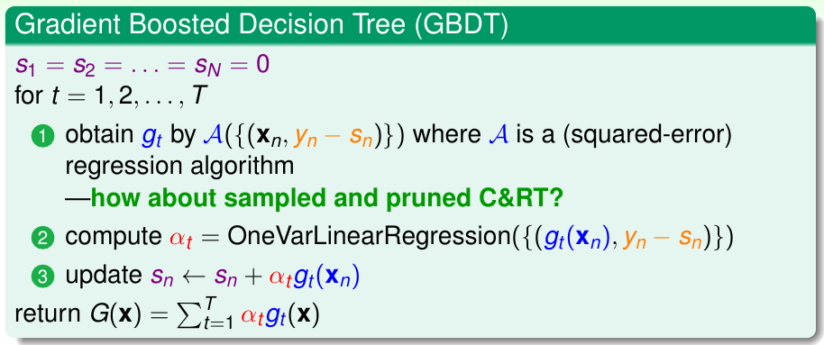
Summary of Aggregation Models
最后，我们总结一下关于Blending的内容。Blending，就是在获得多个不同的g后将它们融合到一起使用（Aggregate）。我们通常有三种方法来做Aggregation。
- Uniform，这是一种简单的方法，实际上就是投票来决定。
- Non-uniform，就是用线性的方法将多个g融合到一起。
- Conditional，使用非线性的模型融合g。
对于Unifrom的方法，它是稳定的，而对于其它两种方法，都存在因为模型过于复杂而导致过拟合的风险，因此需要小心地使用它们。
对于上述的不同的方法，我们通常有不同的演算法来实现：
- Uniform：使用Bagging，就是通过boostrap来得到不同的g，直接通过投票将g组合到一起
- Non-uniform：使用AdaBoost，使用boostrap，得到数据的权重，通过reweighting的方案学习不同的g，然后使用线性模型来组合他们（在得到g的同时就得到了每个g的权重αt）；GradientBoost，使用residual fitting的方案来学习到不同的g。
- Conditional：使用决策树。
其中Boosting-like的演算法最受欢迎（AdaBoost and GradientBoost）。当然，除了以上集中方案以外，我们还可以将Bagging、AdaBoost等和决策树组合到一起使用。使用Bagging和决策树就是随机森林，需要注意的是，此时我们使用的决策树是一个完全长成的树（strong）；使用AdaBoost和决策树就是AdaBoost-DTree，此时需要能力弱一些的树；使用GradientBoost就得到了GBDT，同样它也需要弱一些的树。这三种方法都很常用。
对于Aggregation，它的作用体现在两个方面：
- cure underfitting（防止欠拟合）：当个g很弱，无法完成任务，把多个很弱的g融合到一起，可以得到能力更强的G。
- cure overfitting（防止过拟合）：多个g组合到一起使用，能够得到一个更为均衡的模型，这一点的作用和正则化类似。
适当的Aggregation（也被称为Ensemble）可以提高模型的性能！
文章内容和图片均来自“国立台湾大学林轩田老师”的《机器学习技法》课程！
— END —